Tarragona · Operación de reclamos
Cómo pasar un caso de BeAware que ya está en Pago Reembolso, pedir la devolución en Justo y dejar el caso en Respuesta Cliente.
El caso ya fue evaluado y el reembolso ya está aprobado. Este procedimiento solo paga la devolución y mueve el caso al paso siguiente. No investiga el reclamo y no le escribe al cliente.
Se usa cuando, en Mis casos, el caso cumple todo esto:
Deja dos pestañas abiertas e iniciadas:
| Sistema | Dónde | Para qué |
|---|---|---|
| BeAware 360 | tarragona.deskbeaware.com | El caso y el paso del proceso. |
| Justo Admin | admin.getjusto.com, marca Tarragona | La devolución del pedido. |
En BeAware la empresa es tarragona. Entras con tu usuario y pulsas ENTRAR. La sesión quedó bien cuando aparece Inicio de sesión exitosa.
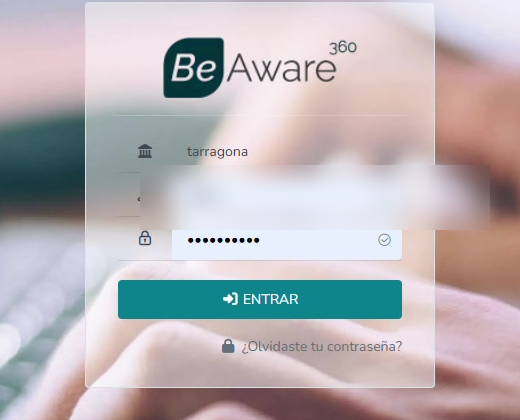
| Dónde | Qué haces | |
|---|---|---|
| 1 | BeAware | Abre Mis casos con el filtro [REC] Pago Reembolso y entra al caso. |
| 2 | BeAware, pestaña Datos | Copia Número Pedido. Anota Devolución Solicitada y Devolución Aprobada. |
| 3 | Justo → Ecommerce → Pedidos | Busca ese número. Tiene que quedar un solo pedido. |
| 4 | Justo, el pedido | Comprueba cliente, local y Total pagado. |
| 5 | Acciones → Solicitar devolución | Monto = total pagado. Motivo y mensaje del caso. |
| 6 | Justo | Confirma el aviso verde, reembolsado por el total y disponible en $0. |
| 7 | BeAware | En Pasos elige Respuesta Cliente. |
| 8 | BeAware | Guarda con el disquete. Tiene que decir Caso actualizado con éxito. |
En Mis casos, el filtro de la izquierda tiene que ser [REC] Pago Reembolso. Abre el caso haciendo clic en la fila. En esta operación el primero era el 261125-000003, asunto PEDIDO NO ENTREGADO, contacto Matías Apariz, paso Pago Reembolso.
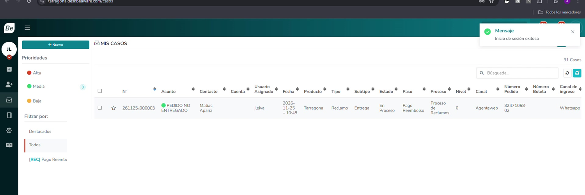
En el caso, baja a las pestañas y abre Datos. De ahí salen los tres datos que cruzas con Justo:
| Campo en BeAware | En este caso | Para qué |
|---|---|---|
| Número Pedido | 32471058-02 | Es lo que se busca en Justo. Número Boleta iba vacío: no se usa. |
| Devolución Solicitada | 12.990 | Tiene que ser igual al total pagado. |
| Devolución Aprobada | 12.990 | Tiene que ser igual al total pagado. |
También anota, para reconocer el pedido: contacto Matías Apariz, local Tarragona Viña Outlet Park, fecha de compra 23/11/2026, canal de venta APP Tarragona. El canal de ingreso del reclamo es Whatsapp: ese es el canal por el que escribió el cliente, no el canal de la venta.
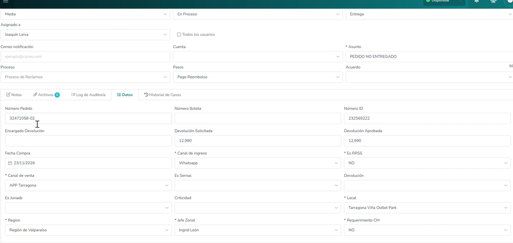
No sigas si los montos no conversan. Devolución Solicitada y Devolución Aprobada tienen que ser el mismo número, y ese número tiene que ser el total pagado del pedido en Justo. Si uno está vacío o es distinto, no pidas la devolución: déjalo anotado y no muevas el paso.
En Justo Admin, marca Tarragona, entra a Ecommerce → Pedidos. En Buscar por ID o nombre pega la parte numérica del pedido, sin el sufijo: 32471058. Tiene que aparecer una sola fila, #32471058-02.
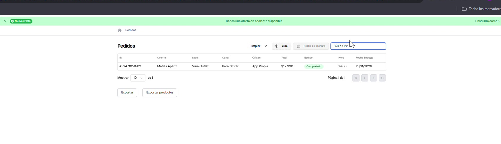
Abre esa fila. Si la búsqueda trae más de un pedido, abre solo el que coincida en cliente, local y total. Si no aparece ninguno, no inventes otro número.
En el pedido, antes de la devolución, estos datos tienen que cuadrar con el caso:
Arriba a la derecha, Acciones → Solicitar devolución.
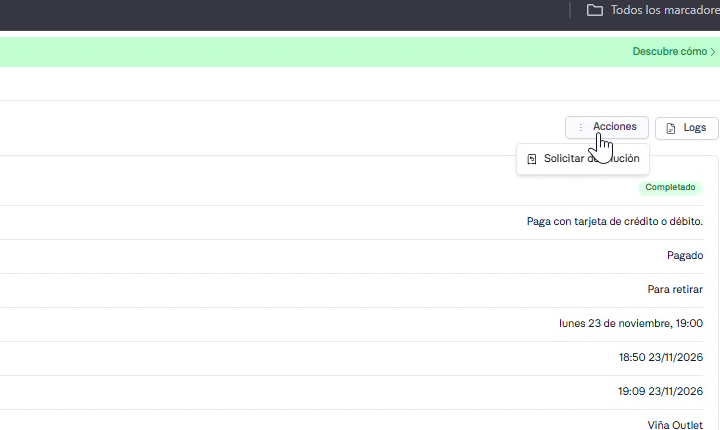
En el cuadro Solicitar devolución completa así:
| Campo | Qué va |
|---|---|
| Monto | 12.990. Es el total pagado, con punto de miles. Tiene que ser igual a Devolución Aprobada. |
| Motivo | Repartidor - Pedido no entregado por driver. |
| Mensaje | pedido no entregado por el repartidor |
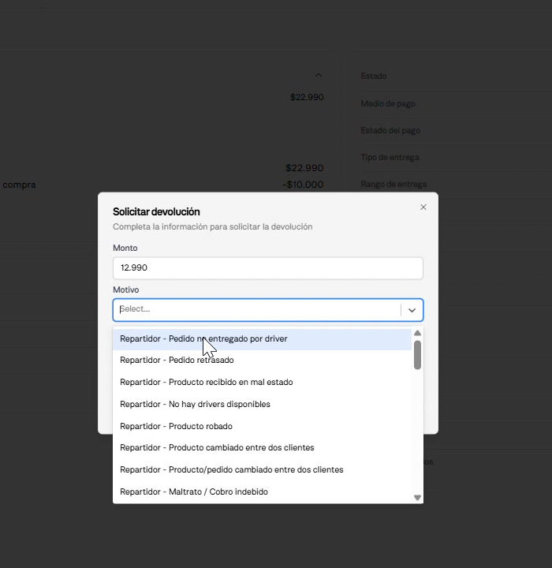
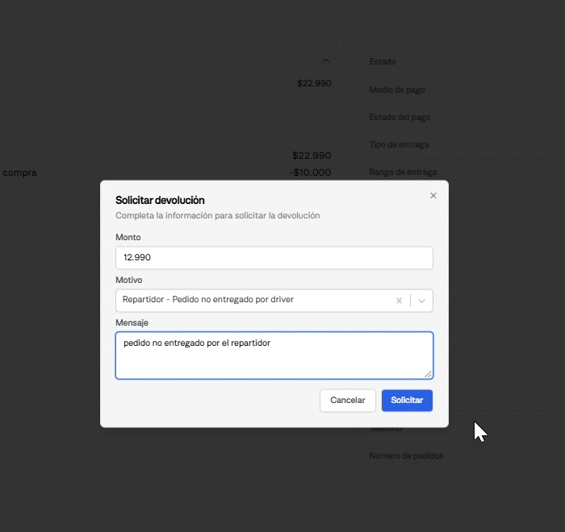
El monto es plata, no el número de pedido. Si en Monto aparece 32471058, está mal: se pegó el pedido. Bórralo y deja 12.990. Recién ahí pulsa Solicitar.
Otros motivos que muestra Justo, por si el caso no es “no entregado”: Pedido retrasado, Producto recibido en mal estado, No hay drivers disponibles, Producto robado, Producto cambiado entre dos clientes, Producto/pedido cambiado entre dos clientes, Maltrato / Cobro indebido. La lista continúa. El mensaje tiene que decir lo mismo que el motivo, en una frase.
No vuelvas a BeAware con el cuadro recién cerrado. En el pedido tienen que verse estas cuatro cosas:
pedido no entregado por el repartidor.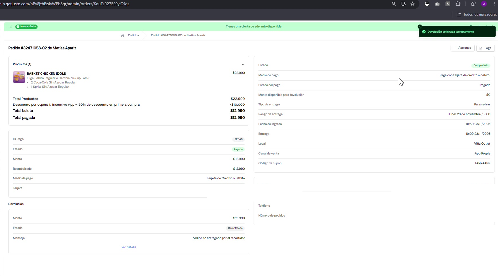
Si no aparece el aviso, el disponible no queda en $0 o el estado no es Completada, no cambies el paso en BeAware. El caso sigue en Pago Reembolso hasta que Justo muestre la devolución.
Vuelve a la pestaña de BeAware. El caso sigue en el paso 9, Pago Reembolso. En el campo Pasos elige Respuesta Cliente.
Desde este paso el campo ofrece tres salidas: quedarse en Pago Reembolso, pasar a Respuesta Cliente o pasar a Solicitud más Antecedentes. Con la devolución ya Completada en Justo, la salida es Respuesta Cliente. Solicitud más Antecedentes se usa cuando falta algo para poder pagar, no después de haberlo pagado.
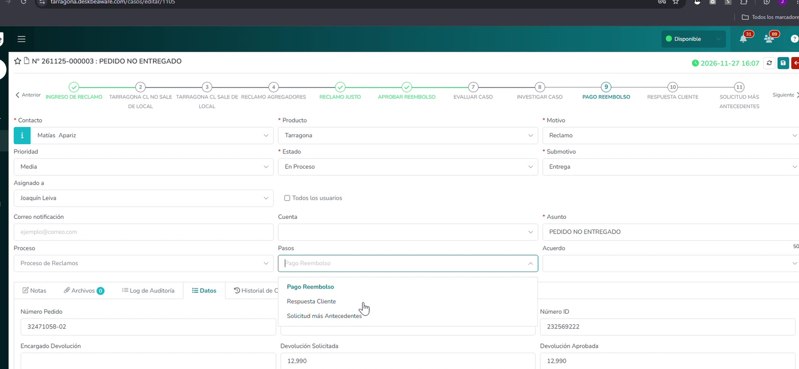
El recorrido del reclamo, para ubicarte, es este:
Arriba a la derecha del caso, al lado del reloj, está el botón verde azulado con el disquete. Ese es Guardar. La flecha roja de al lado vuelve atrás: no la uses para salir antes de guardar.
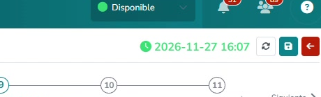
Al guardar, BeAware muestra Caso actualizado con éxito y regresa a Mis casos. El caso deja de estar en la cola de Pago Reembolso.
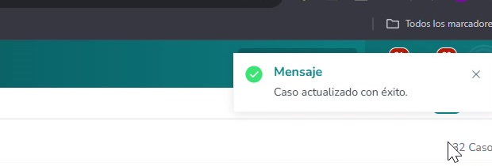
| Caso | 261125-000003 · PEDIDO NO ENTREGADO |
|---|---|
| Contacto | Matías Apariz |
| Fecha en la cola | 25-11-2026 10:48 |
| Pedido Justo | #32471058-02 |
| Compra | 23-11-2026, 18:50. Retiro en Viña Outlet, rango 19:00. App Propia. Cupón TARRAAPP. |
| Producto | Basket Chicken Idols. Lista $22.990, descuento $10.000, pagado $12.990 con tarjeta. |
| Devolución | $12.990 · Repartidor - Pedido no entregado por driver · “pedido no entregado por el repartidor” · Completada |
| Paso al cerrar | Respuesta Cliente |
Quedó bien solo si se cumplen las dos. En Justo, la devolución está Completada por el total pagado y el disponible está en $0. En BeAware, el aviso dice Caso actualizado con éxito y el caso ya no está en Pago Reembolso.
Este paso no le responde al cliente. Eso corresponde al paso en el que quedó el caso, Respuesta Cliente.
| Lo que ves | Qué haces |
|---|---|
| Devolución Solicitada y Devolución Aprobada no son iguales, o no calzan con el total pagado. | No pidas la devolución y no muevas el paso. |
| La búsqueda en Justo no trae el pedido, o trae otro cliente u otro local. | No abras una devolución sobre otro pedido. Vuelve a copiar Número Pedido. |
| El monto del cuadro muestra el número de pedido. | Déjalo en el total pagado (12.990 en el ejemplo) antes de Solicitar. |
| Justo no muestra Completada, o el disponible no queda en $0. | El caso se queda en Pago Reembolso. |
| Falta un dato para poder pagar. | No uses Respuesta Cliente. El paso para pedir lo que falta es Solicitud más Antecedentes, y solo si de verdad no se puede pagar. |
pedido no entregado por el repartidor.Tarragona · Pago de reembolso, pedido no entregado · BeAware 360 y Justo Admin · 25 de noviembre de 2026.